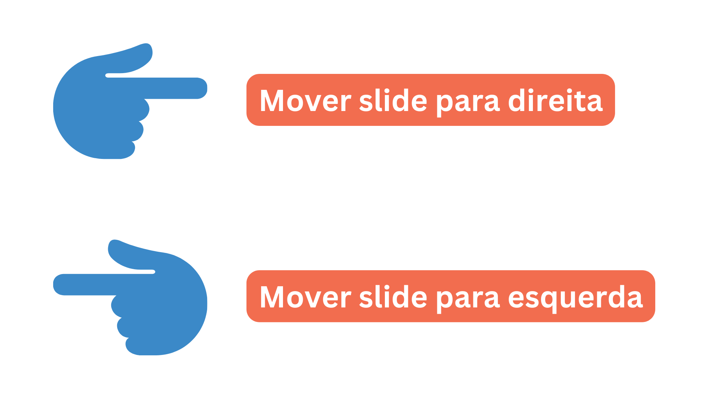

Para a utilização da Apresentação Inteligente, precisa seguir os seguintes passos:
1. Autorizar a permissão da câmera de webcam para a utilização

2. Fazer o upload da Apresentação que deseja apresentar

3. Garanta que a sua webcam esteja com a sua mão no campo de visão da câmera
A câmera reconhece propositalmente 1 mão por vez

Os comandos da Apresentação Inteligente são os seguintes:
